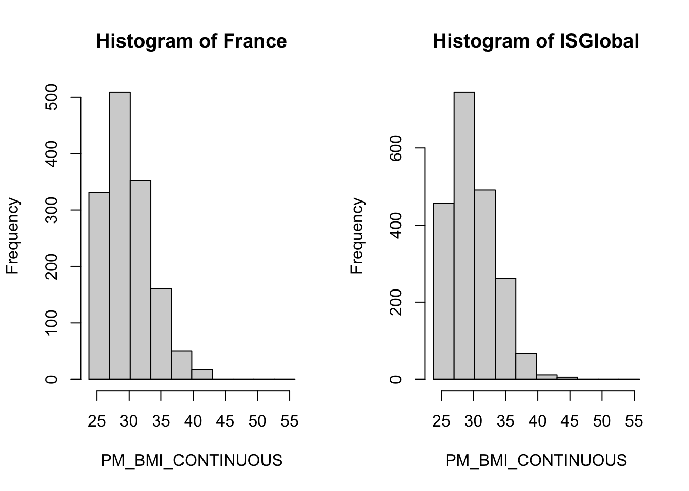
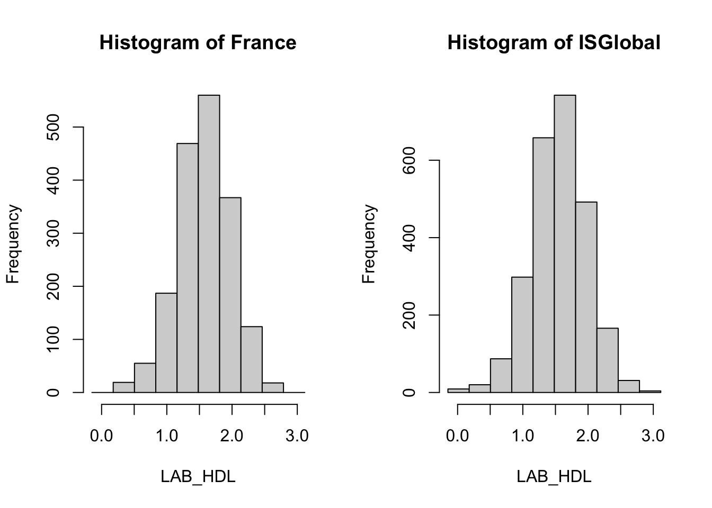
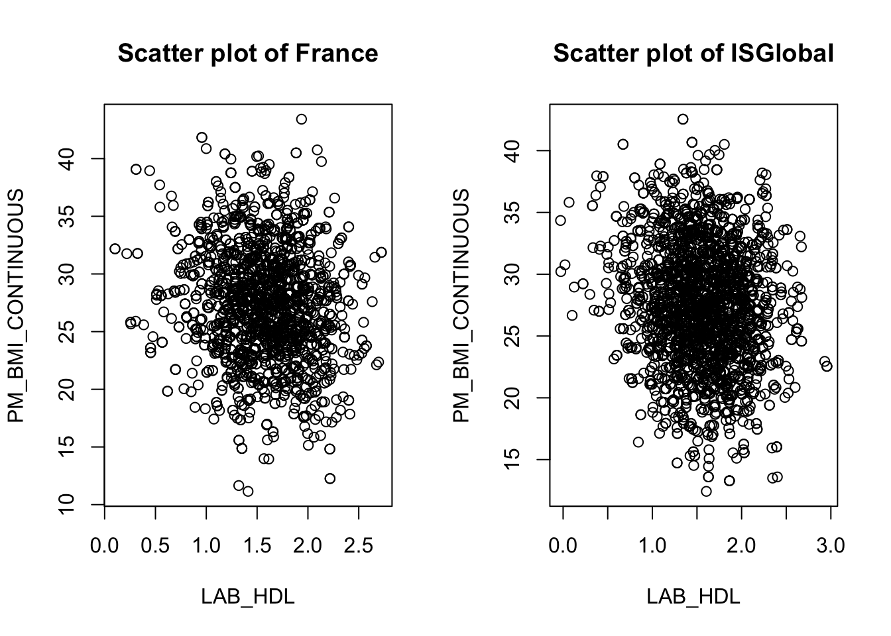
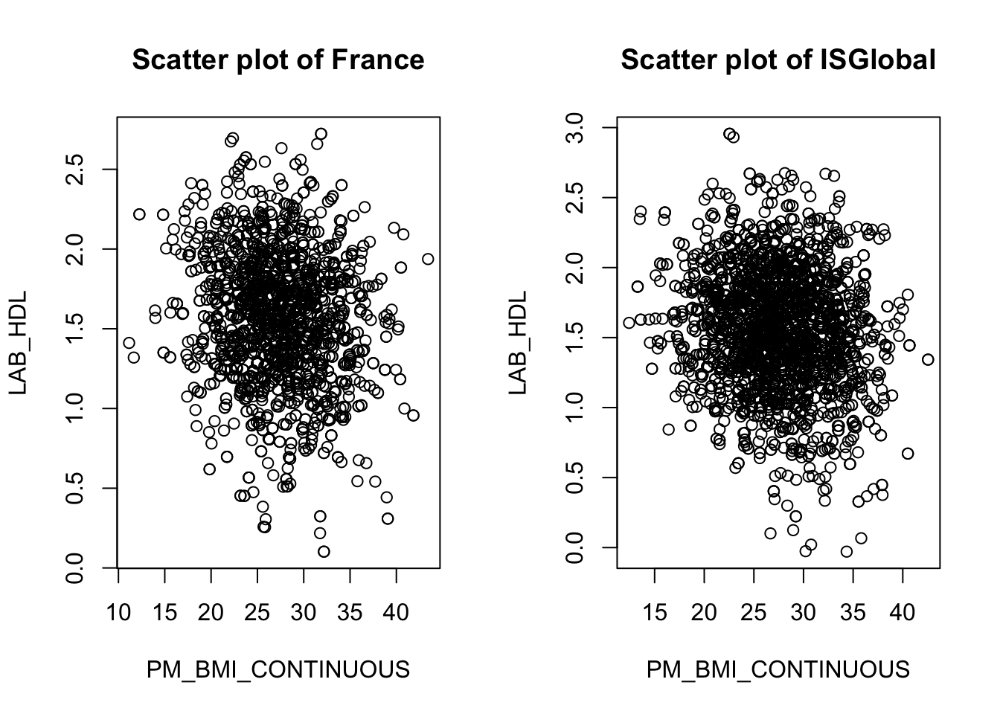
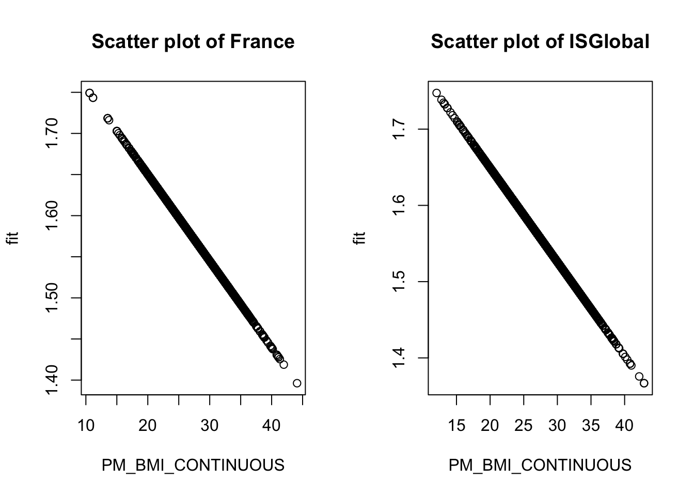
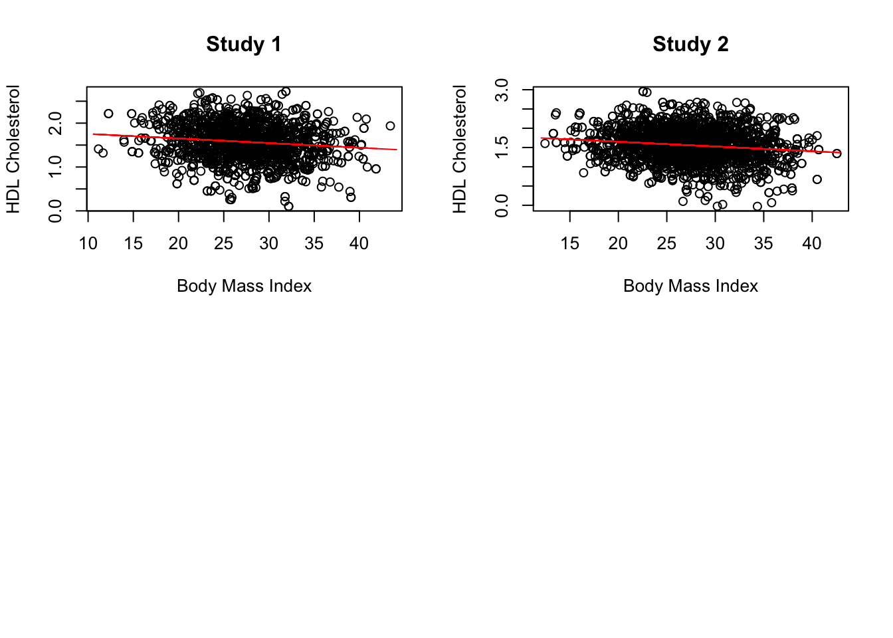
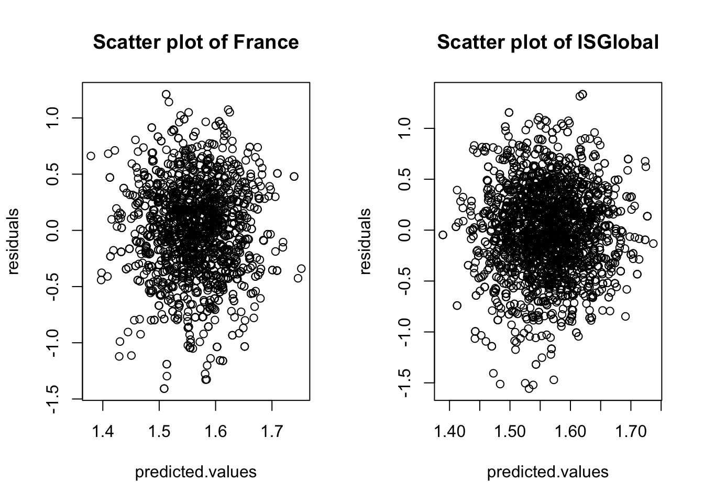
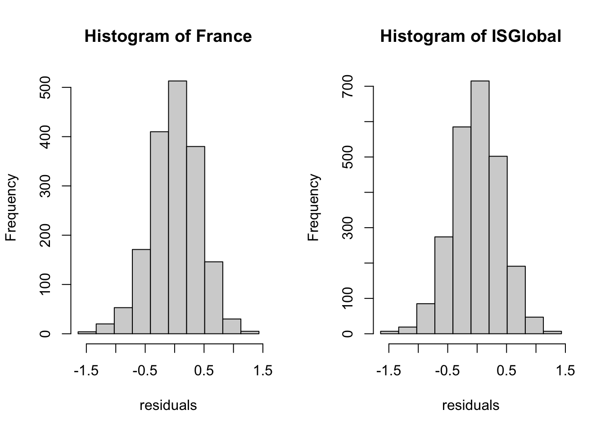
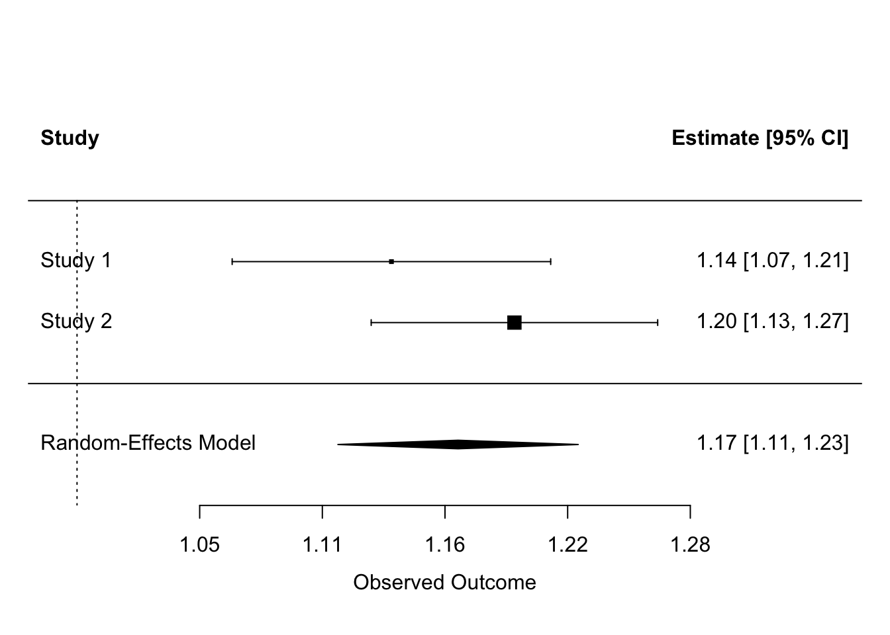
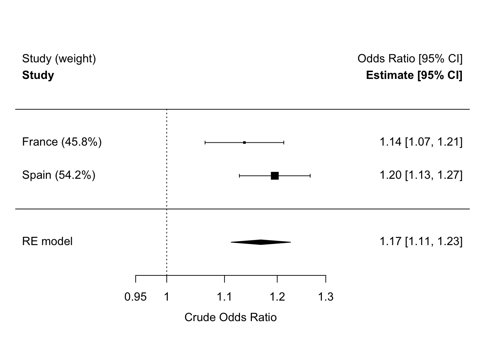

install.packages("devtools")
library(devtools)
devtools::session_info()DataSHIELD Workshop: Data Science Without Borders
INFORMATION FOR NEWCOMERS TO RSTUDIO NOTEBOOKS:
This is an R Markdown Notebook. When you execute code within the notebook, the results appear beneath the code.
Try executing this chunk by clicking the Run button within the chunk or by placing your cursor inside it and pressing Ctrl+Shift+Enter.
DataSHIELD for analyzing simulated D data
The plan for this workshop is as follows:
- Installing DataSHIELD
- Logging in and assigning data
- Describing data
- Manipulating data
- Subsetting data
- Data manipulation with dsHelper
- Making graphs
- Performing regression analysis
Installing DataSHIELD
Firstly: check whether we have the right R packages installed to run DataSHIELD: using the very helpful devtools package (which has already been installed for us by Stuart!), we’ll use the “Session info” command:
We are missing some of the necessary packages: “DSI”, “DSOpal” and “dsBaseClient”.
install.packages('DSI')
install.packages('DSOpal')
devtools::install_github("datashield/dsBaseClient", force = TRUE)
devtools::install_github("timcadman/ds-helper")
install.packages("metafor")Remember to load them into this R session using “library()” command:
# libraries to connect with Opal databases
library(DSI)
library(DSOpal)
# DataSHIELD client libraries
library(dsBaseClient)
library(dsHelper)
# Library to perform meta-analyses
library(metafor)Check that they have now been added:
devtools::session_info()- Session info ---------------------------------------------------------------
setting value
version R version 4.4.2 (2024-10-31)
os macOS Sequoia 15.4.1
system aarch64, darwin20
ui X11
language (EN)
collate C
ctype C
tz Europe/Madrid
date 2025-10-02
pandoc 3.6.3 @ /opt/homebrew/bin/ (via rmarkdown)
quarto 1.7.31 @ /usr/local/bin/quarto
- Packages -------------------------------------------------------------------
package * version date (UTC) lib source
arrow 20.0.0.2 2025-05-26 [1] CRAN (R 4.4.1)
assertthat 0.2.1 2019-03-21 [1] CRAN (R 4.4.1)
backports 1.5.0 2024-05-23 [1] CRAN (R 4.4.1)
bit 4.6.0 2025-03-06 [1] CRAN (R 4.4.1)
bit64 4.6.0-1 2025-01-16 [1] CRAN (R 4.4.1)
boot 1.3-31 2024-08-28 [1] CRAN (R 4.4.2)
cachem 1.1.0 2024-05-16 [1] CRAN (R 4.4.1)
checkmate 2.3.2 2024-07-29 [1] CRAN (R 4.4.0)
cli 3.6.5 2025-04-23 [1] CRAN (R 4.4.1)
crayon 1.5.3 2024-06-20 [1] CRAN (R 4.4.1)
data.table 1.17.8 2025-07-10 [1] CRAN (R 4.4.1)
devtools 2.4.5 2022-10-11 [1] CRAN (R 4.4.0)
digest 0.6.37 2024-08-19 [1] CRAN (R 4.4.1)
dplyr 1.1.4 2023-11-17 [1] CRAN (R 4.4.0)
dsBaseClient * 6.3.4 2025-09-25 [1] Github (datashield/dsBaseClient@8b9557f)
dsHelper * 1.7.1 2025-07-03 [1] Github (timcadman/ds-helper@1b2348d)
DSI * 1.7.1 2024-11-03 [1] CRAN (R 4.4.1)
DSOpal * 1.4.0 2022-10-06 [1] CRAN (R 4.4.0)
ellipsis 0.3.2 2021-04-29 [1] CRAN (R 4.4.1)
evaluate 1.0.3 2025-01-10 [1] CRAN (R 4.4.1)
fastmap 1.2.0 2024-05-15 [1] CRAN (R 4.4.1)
forcats 1.0.0 2023-01-29 [1] CRAN (R 4.4.0)
fs 1.6.5 2024-10-30 [1] CRAN (R 4.4.1)
generics 0.1.4 2025-05-09 [1] CRAN (R 4.4.1)
glue 1.8.0 2024-09-30 [1] CRAN (R 4.4.1)
haven 2.5.4 2023-11-30 [1] CRAN (R 4.4.0)
hms 1.1.3 2023-03-21 [1] CRAN (R 4.4.0)
htmltools 0.5.8.1 2024-04-04 [1] CRAN (R 4.4.1)
htmlwidgets 1.6.4 2023-12-06 [1] CRAN (R 4.4.0)
httpuv 1.6.15 2024-03-26 [1] CRAN (R 4.4.0)
httr * 1.4.7 2023-08-15 [1] CRAN (R 4.4.0)
jsonlite 2.0.0 2025-03-27 [1] CRAN (R 4.4.1)
knitr 1.49 2024-11-08 [1] CRAN (R 4.4.1)
labelled 2.14.0 2025-01-08 [1] CRAN (R 4.4.1)
later 1.4.1 2024-11-27 [1] CRAN (R 4.4.1)
lattice 0.22-6 2024-03-20 [1] CRAN (R 4.4.2)
lifecycle 1.0.4 2023-11-07 [1] CRAN (R 4.4.1)
lme4 1.1-37 2025-03-26 [1] CRAN (R 4.4.1)
magrittr 2.0.4 2025-09-12 [1] CRAN (R 4.4.1)
MASS 7.3-61 2024-06-13 [1] CRAN (R 4.4.2)
mathjaxr 1.8-0 2025-04-30 [1] CRAN (R 4.4.1)
Matrix * 1.7-1 2024-10-18 [1] CRAN (R 4.4.2)
memoise 2.0.1 2021-11-26 [1] CRAN (R 4.4.0)
metadat * 1.4-0 2025-02-04 [1] CRAN (R 4.4.1)
metafor * 4.8-0 2025-01-28 [1] CRAN (R 4.4.1)
mime 0.13 2025-03-17 [1] CRAN (R 4.4.1)
miniUI 0.1.1.1 2018-05-18 [1] CRAN (R 4.4.0)
minqa 1.2.8 2024-08-17 [1] CRAN (R 4.4.1)
nlme 3.1-166 2024-08-14 [1] CRAN (R 4.4.2)
nloptr 2.2.1 2025-03-17 [1] CRAN (R 4.4.1)
numDeriv * 2016.8-1.1 2019-06-06 [1] CRAN (R 4.4.1)
opalr * 3.4.2 2024-09-18 [1] CRAN (R 4.4.1)
pillar 1.11.1 2025-09-17 [1] CRAN (R 4.4.1)
pkgbuild 1.4.6 2025-01-16 [1] CRAN (R 4.4.1)
pkgconfig 2.0.3 2019-09-22 [1] CRAN (R 4.4.1)
pkgload 1.4.0 2024-06-28 [1] CRAN (R 4.4.0)
prettyunits 1.2.0 2023-09-24 [1] CRAN (R 4.4.1)
profvis 0.4.0 2024-09-20 [1] CRAN (R 4.4.1)
progress * 1.2.3 2023-12-06 [1] CRAN (R 4.4.0)
promises 1.3.2 2024-11-28 [1] CRAN (R 4.4.1)
purrr 1.1.0 2025-07-10 [1] CRAN (R 4.4.1)
R6 * 2.6.1 2025-02-15 [1] CRAN (R 4.4.1)
rbibutils 2.3 2024-10-04 [1] CRAN (R 4.4.1)
Rcpp 1.1.0 2025-07-02 [1] CRAN (R 4.4.1)
Rdpack 2.6.4 2025-04-09 [1] CRAN (R 4.4.1)
readr 2.1.5 2024-01-10 [1] CRAN (R 4.4.0)
reformulas 0.4.1 2025-04-30 [1] CRAN (R 4.4.1)
remotes 2.5.0 2024-03-17 [1] CRAN (R 4.4.1)
rlang 1.1.6 2025-04-11 [1] CRAN (R 4.4.1)
rmarkdown 2.29 2024-11-04 [1] CRAN (R 4.4.1)
sessioninfo 1.2.3 2025-02-05 [1] CRAN (R 4.4.1)
shiny 1.10.0 2024-12-14 [1] CRAN (R 4.4.1)
stringi 1.8.7 2025-03-27 [1] CRAN (R 4.4.1)
stringr 1.5.2 2025-09-08 [1] CRAN (R 4.4.1)
tibble 3.3.0 2025-06-08 [1] CRAN (R 4.4.1)
tidyr 1.3.1 2024-01-24 [1] CRAN (R 4.4.1)
tidyselect 1.2.1 2024-03-11 [1] CRAN (R 4.4.0)
tzdb 0.5.0 2025-03-15 [1] CRAN (R 4.4.1)
urlchecker 1.0.1 2021-11-30 [1] CRAN (R 4.4.1)
usethis 3.1.0 2024-11-26 [1] CRAN (R 4.4.1)
vctrs 0.6.5 2023-12-01 [1] CRAN (R 4.4.0)
xfun 0.50 2025-01-07 [1] CRAN (R 4.4.1)
xtable 1.8-4 2019-04-21 [1] CRAN (R 4.4.1)
yaml 2.3.10 2024-07-26 [1] CRAN (R 4.4.1)
[1] /Library/Frameworks/R.framework/Versions/4.4-arm64/Resources/library
* -- Packages attached to the search path.
------------------------------------------------------------------------------Logging in and assigning data
The login script has to be customized to fit the data you are trying to connect to.
The “builder <-” and “builder$append” functions are standard features.
For this demonstration we are connecting to simulated data- but if it was data of real people, it would be very important for us not to be able to see individual patients’ information.
For this workshop, we’ll imagine that the data is hosted in a two Opal repositories located in France and Spain. The tables are in a project called CNSIM and the tables are named CNSIM1 and CNSIM2 respectively. Data correspond to two simulated datasets with different numbers of observations of 11 harmonized variables. They contain synthetic data based on a model derived from the participants of the 1958 Birth Cohort, as part of an obesity methodological development project. This dataset does contain some NA values. The available variables are:
Error: 'fig/table_variables_cnsim.txt' does not exist in current working directory ('/Users/david/Documents/GitHub/workshop_datashield').Error: objeto 'vars' no encontradoNow, using DataSHIELD, we have to connect to the servers which contains the data in the Opal databases. The below code creates a local R object with the login details for each study:
builder <- DSI::newDSLoginBuilder()
# Server 1: France
builder$append(
server = 'France',
url = "https://opal-demo.obiba.org",
user = "administrator",
password = "password",
table = "CNSIM.CNSIM1",
profile = "default"
)
# Server 2: Spain (ISGlobal)
builder$append(
server = 'ISGlobal',
url = "https://opal.isglobal.org/repo",
user = "invited",
password = "12345678Aa@",
table = "CNSIM.CNSIM2",
profile = "rock-inma"
)NOTE: The profile argument is set up by the data owners and controls both, the datasets or projects that are available for this user, as well as the different DataSHIELD packages.
Now we need to connect, referring to the login information in the data frame we have just created:
logindata <- builder$build()
conns <- datashield.login(logins = logindata, assign = TRUE)The ‘assign’ argument can be set to either ‘TRUE’ or ‘FALSE’. If set to ‘TRUE’, all the available variables within that table will be assigned to a serverside data frame and available to access. If you only need a small subset of available variables it can be preferable to set this to ‘FALSE’ and later use the function ‘datashield.assign’ to separately assign only the variables you need. The output of this box has useful progress bars which show the progress of connecting to studies, one by one.
We can see the serverside has object called D which correspond to the dataset CNSIM of each study by running:
ds.ls()$France
$France$environment.searched
[1] "R_GlobalEnv"
$France$objects.found
[1] "D"
$ISGlobal
$ISGlobal$environment.searched
[1] "R_GlobalEnv"
$ISGlobal$objects.found
[1] "D"which is a data.frame called D (this name was set using the ‘symbol’ argument in datashield.login above). We can check that this is a data.frame by typing
ds.class(x = "D", datasources = conns)$France
[1] "data.frame"
$ISGlobal
[1] "data.frame"NOTE: writting datasources = conns is not required. This is just to emphasize that if you have several connections you need to specify which one is yours. By default, it missing it looks for your local environment. Also, the argument x = "D" can be simply written by "D".
and the data.frame has the variables we have previously described
ds.colnames("D")$France
[1] "LAB_TSC" "LAB_TRIG" "LAB_HDL"
[4] "LAB_GLUC_ADJUSTED" "PM_BMI_CONTINUOUS" "DIS_CVA"
[7] "MEDI_LPD" "DIS_DIAB" "DIS_AMI"
[10] "GENDER" "PM_BMI_CATEGORICAL"
$ISGlobal
[1] "DIS_AMI" "DIS_CVA" "DIS_DIAB"
[4] "GENDER" "LAB_GLUC_ADJUSTED" "LAB_HDL"
[7] "LAB_TRIG" "LAB_TSC" "MEDI_LPD"
[10] "PM_BMI_CATEGORICAL" "PM_BMI_CONTINUOUS" Describing data (‘aggregate-type functions’)
There are many data exploration functions already implemented into DataSHIELD: let’s check it out at the wiki https://data2knowledge.atlassian.net/wiki/spaces/DSDEV/pages/2733244417/Version+6.2.0
Scroll down to “Data structure queries”. Let’s try out a few of these:
ds.dim(x="D")$`dimensions of D in France`
[1] 2163 11
$`dimensions of D in ISGlobal`
[1] 3088 11
$`dimensions of D in combined studies`
[1] 5251 11What it is mandatory is to write the name of the data.frame with ““.
We’re going to be focus on HDL
This is a measure of HDL Cholesterol (aka the “good cholesterol” level)
Let’s run some summary statistic commands
ds.class(x='D$LAB_HDL')$France
[1] "numeric"
$ISGlobal
[1] "numeric"ds.length(x='D$LAB_HDL')$`length of D$LAB_HDL in France`
[1] 2163
$`length of D$LAB_HDL in ISGlobal`
[1] 3088
$`total length of D$LAB_HDL in all studies combined`
[1] 5251ds.mean(x='D$LAB_HDL')$Mean.by.Study
EstimatedMean Nmissing Nvalid Ntotal
France 1.569416 360 1803 2163
ISGlobal 1.556648 555 2533 3088
$Nstudies
[1] 2
$ValidityMessage
ValidityMessage
France "VALID ANALYSIS"
ISGlobal "VALID ANALYSIS"What is this other function to obtain the mean? Let’s use the DataSHIELD function help documentation.
?ds.quantileMeanNow, putting into action some of what we’ve learned about the function arguments. NOTE: ‘split’ is in case you have data from different servers and you want to see the statistic one by one.
ds.quantileMean(x='D$LAB_HDL') 5% 10% 25% 50% 75% 90% 95% Mean
0.8606589 1.0385205 1.2964949 1.5704848 1.8418712 2.0824057 2.2191369 1.5619572 ds.quantileMean(x='D$LAB_HDL', type = "split")$France
5% 10% 25% 50% 75% 90% 95% Mean
0.875240 1.047400 1.300000 1.581000 1.844500 2.090000 2.210900 1.569416
$ISGlobal
5% 10% 25% 50% 75% 90% 95% Mean
0.850280 1.032200 1.294000 1.563000 1.840000 2.077000 2.225000 1.556648 Trying to calculate the variance of FEV1:
?ds.vards.var(x = 'D$LAB_HDL', type = "split")$Variance.by.Study
EstimatedVar Nmissing Nvalid Ntotal
France 0.1707959 360 1803 2163
ISGlobal 0.1786661 555 2533 3088
$Nstudies
[1] 2
$ValidityMessage
ValidityMessage
France "VALID ANALYSIS"
ISGlobal "VALID ANALYSIS"Can we store the results calculated from a DataSHIELD analysis in a local R session?
Yes- the output of aggregate functions are always R objects, hence can be stored.
a<-ds.var(x = 'D$LAB_HDL', type = "split")[[1]]
a EstimatedVar Nmissing Nvalid Ntotal
France 0.1707959 360 1803 2163
ISGlobal 0.1786661 555 2533 3088b<-ds.var(x = 'D$LAB_HDL', type = "split")[[1]][[1,1]]
b[1] 0.1707959The square brackets are because we are trying to access an element of a list- which is the R object that DataSHIELD aggregate functions output as.
Factor variables visualize by simply writing
ds.table("D$GENDER")
Data in all studies were valid
Study 1 : No errors reported from this study
Study 2 : No errors reported from this study$output.list
$output.list$TABLE_rvar.by.study_row.props
study
D$GENDER France ISGlobal
0 0.4079193 0.5920807
1 0.4160839 0.5839161
NA NaN NaN
$output.list$TABLE_rvar.by.study_col.props
study
D$GENDER France ISGlobal
0 0.5048544 0.5132772
1 0.4951456 0.4867228
NA 0.0000000 0.0000000
$output.list$TABLE_rvar.by.study_counts
study
D$GENDER France ISGlobal
0 1092 1585
1 1071 1503
NA 0 0
$output.list$TABLES.COMBINED_all.sources_proportions
D$GENDER
0 1 NA
0.51 0.49 0.00
$output.list$TABLES.COMBINED_all.sources_counts
D$GENDER
0 1 NA
2677 2574 0
$validity.message
[1] "Data in all studies were valid"Using dsHelper to retrieve statistics in a neater format.
As you may have noticed, some operations which are more straightforward in R can be more complicated in datashield. To help with this, the dsHelper package allows you to do some common operations in fewer lines of code. DsHelper is an entirely serverside package - it contains only clientside functions which call DataSHIELD functions serverside.
We have seen datashield has a range of functions to retrieve statistics, but is limited in that (i) you need to use different functions for different statistics, (ii) you can only get stats for one variable at a time. dh.GetStats returns many useful stats in a tibble, and allows you to retrieve stats for multiple variables at a time.
neat_stats <- dh.getStats(
df = "D",
vars = c("GENDER", "LAB_TRIG", "LAB_HDL", "DIS_CVA", "DIS_DIAB"))
neat_stats$categorical
# A tibble: 27 x 10
variable cohort category value cohort_n valid_n missing_n perc_valid
<chr> <chr> <fct> <int> <int> <int> <int> <dbl>
1 DIS_CVA combined 0 5248 5251 5251 0 99.9
2 DIS_CVA combined 1 3 5251 5251 0 0.06
3 DIS_CVA combined <NA> 0 5251 NA NA NA
4 DIS_DIAB combined 0 5174 5251 5251 0 98.5
5 DIS_DIAB combined 1 77 5251 5251 0 1.47
6 DIS_DIAB combined <NA> 0 5251 NA NA NA
7 GENDER combined 0 2677 5251 5251 0 51.0
8 GENDER combined 1 2574 5251 5251 0 49.0
9 GENDER combined <NA> 0 5251 NA NA NA
10 DIS_CVA France 0 2163 2163 2163 0 100
# i 17 more rows
# i 2 more variables: perc_missing <dbl>, perc_total <dbl>
$continuous
# A tibble: 6 x 15
variable cohort mean std.dev perc_5 perc_10 perc_25 perc_50 perc_75 perc_90
<chr> <chr> <dbl> <dbl> <dbl> <dbl> <dbl> <dbl> <dbl> <dbl>
1 LAB_HDL France 1.57 0.41 0.88 1.05 1.3 1.58 1.84 2.09
2 LAB_HDL ISGlobal 1.56 0.42 0.85 1.03 1.29 1.56 1.84 2.08
3 LAB_TRIG France 2.1 1.58 -0.36 0.17 1.04 2.11 3.12 4.07
4 LAB_TRIG ISGlobal 2.05 1.58 -0.55 0.01 1 2.05 3.06 4.03
5 LAB_HDL combined 1.56 0.42 0.86 1.04 1.3 1.57 1.84 2.08
6 LAB_TRIG combined 2.07 1.58 -0.47 0.08 1.02 2.08 3.09 4.05
# i 5 more variables: perc_95 <dbl>, valid_n <dbl>, cohort_n <dbl>,
# missing_n <dbl>, missing_perc <dbl>Manipulating data (‘assign-type’ functions)
Assign-type functions are ones where a calculation is done on the data stored at the server (and results of that calculation are “assigned” to a serverside variable, and saved there), but is NOT transmitted back to the user.
The reason for this is that some calculations could be highly disclosive- and if such data were transmitted to the analyst, with not much effort at all, with an inverse function, the analyst could work out exactly what the raw data are- and thus the data’s privacy is broken!
To demonstrate:
ds.ls()$France
$France$environment.searched
[1] "R_GlobalEnv"
$France$objects.found
[1] "D"
$ISGlobal
$ISGlobal$environment.searched
[1] "R_GlobalEnv"
$ISGlobal$objects.found
[1] "D"ds.log(x='D$LAB_HDL', newobj='HDL_log')
ds.ls()$France
$France$environment.searched
[1] "R_GlobalEnv"
$France$objects.found
[1] "D" "HDL_log"
$ISGlobal
$ISGlobal$environment.searched
[1] "R_GlobalEnv"
$ISGlobal$objects.found
[1] "D" "HDL_log"ds.mean(x="HDL_log")$Mean.by.Study
EstimatedMean Nmissing Nvalid Ntotal
France 0.4086112 361 1802 2163
ISGlobal 0.3971793 558 2530 3088
$Nstudies
[1] 2
$ValidityMessage
ValidityMessage
France "VALID ANALYSIS"
ISGlobal "VALID ANALYSIS"ds.mean(x="D$LAB_HDL")$Mean.by.Study
EstimatedMean Nmissing Nvalid Ntotal
France 1.569416 360 1803 2163
ISGlobal 1.556648 555 2533 3088
$Nstudies
[1] 2
$ValidityMessage
ValidityMessage
France "VALID ANALYSIS"
ISGlobal "VALID ANALYSIS"The second “ds.mean” shows that the mean of the logged values are definitely smaller, by about the right amount. The DataSHIELD log function has worked.
There is another DataSHIELD assign function that can be used for data transformations - a square root function. Let’s test again:
ds.sqrt(x='D$LAB_HDL', newobj='HDL_sqrt')
ds.ls()$France
$France$environment.searched
[1] "R_GlobalEnv"
$France$objects.found
[1] "D" "HDL_log" "HDL_sqrt"
$ISGlobal
$ISGlobal$environment.searched
[1] "R_GlobalEnv"
$ISGlobal$objects.found
[1] "D" "HDL_log" "HDL_sqrt"ds.mean(x="HDL_sqrt")$Mean.by.Study
EstimatedMean Nmissing Nvalid Ntotal
France 1.240844 361 1802 2163
ISGlobal 1.235489 558 2530 3088
$Nstudies
[1] 2
$ValidityMessage
ValidityMessage
France "VALID ANALYSIS"
ISGlobal "VALID ANALYSIS"ds.mean(x="D$LAB_HDL")$Mean.by.Study
EstimatedMean Nmissing Nvalid Ntotal
France 1.569416 360 1803 2163
ISGlobal 1.556648 555 2533 3088
$Nstudies
[1] 2
$ValidityMessage
ValidityMessage
France "VALID ANALYSIS"
ISGlobal "VALID ANALYSIS"These new objects are not attached to a dataframe. Use the help function to find out about the ds.dataFrame function, which can be used to combine objects.
Now join “HDL_sqrt” and “HDL_log” to the dataframe “D”.
ds.dataFrame(c("D", "HDL_sqrt", "HDL_log"), newobj = "D")$is.object.created
[1] "A data object <D> has been created in all specified data sources"
$validity.check
[1] "<D> appears valid in all sources"ds.colnames("D")$France
[1] "LAB_TSC" "LAB_TRIG" "LAB_HDL"
[4] "LAB_GLUC_ADJUSTED" "PM_BMI_CONTINUOUS" "DIS_CVA"
[7] "MEDI_LPD" "DIS_DIAB" "DIS_AMI"
[10] "GENDER" "PM_BMI_CATEGORICAL" "HDL_sqrt"
[13] "HDL_log"
$ISGlobal
[1] "DIS_AMI" "DIS_CVA" "DIS_DIAB"
[4] "GENDER" "LAB_GLUC_ADJUSTED" "LAB_HDL"
[7] "LAB_TRIG" "LAB_TSC" "MEDI_LPD"
[10] "PM_BMI_CATEGORICAL" "PM_BMI_CONTINUOUS" "HDL_sqrt"
[13] "HDL_log" EXERCISE: Using some of the functions above, explore the distribution of the variable “PM_BMI_CATEGORICAL” in dataframe “D”.
Here you see this has returned a list of two tibbles separated into continuous and categorical information. For the categorical variables info is returned on ns, percentages and missingness within each category, whilst for continuous variables info is returned on mean, standard deviation, quantiles and also missingness.
Sub-setting data
In DataSHIELD there is one function that allows sub-setting of data, ds.dataFrameSubset .
You may wish to use it to:
Subset a column of data by its “Class” Subset a dataframe to remove any “NA”s Subset a numeric column of a dataframe using a Boolean inequalilty
# first find the column name you wish to refer to
ds.colnames(x="D")$France
[1] "LAB_TSC" "LAB_TRIG" "LAB_HDL"
[4] "LAB_GLUC_ADJUSTED" "PM_BMI_CONTINUOUS" "DIS_CVA"
[7] "MEDI_LPD" "DIS_DIAB" "DIS_AMI"
[10] "GENDER" "PM_BMI_CATEGORICAL" "HDL_sqrt"
[13] "HDL_log"
$ISGlobal
[1] "DIS_AMI" "DIS_CVA" "DIS_DIAB"
[4] "GENDER" "LAB_GLUC_ADJUSTED" "LAB_HDL"
[7] "LAB_TRIG" "LAB_TSC" "MEDI_LPD"
[10] "PM_BMI_CATEGORICAL" "PM_BMI_CONTINUOUS" "HDL_sqrt"
[13] "HDL_log" # then check which levels you need to apply a boolean operator to:
ds.levels(x="D$GENDER")$France
$France$Levels
[1] "0" "1"
$France$ValidityMessage
[1] "VALID ANALYSIS"
$ISGlobal
$ISGlobal$Levels
[1] "0" "1"
$ISGlobal$ValidityMessage
[1] "VALID ANALYSIS"?ds.dataFrameSubsetSplitting into GENDER groups, assigned to different server-side objects.
ds.dataFrameSubset(df.name = "D", V1.name = "D$GENDER", V2.name = "1",
Boolean.operator = "==", newobj = "CNSIM.subset.Males")$is.object.created
[1] "A data object <CNSIM.subset.Males> has been created in all specified data sources"
$validity.check
[1] "<CNSIM.subset.Males> appears valid in all sources"ds.dataFrameSubset(df.name = "D", V1.name = "D$GENDER", V2.name = "0",
Boolean.operator = "==", newobj = "CNSIM.subset.Females")$is.object.created
[1] "A data object <CNSIM.subset.Females> has been created in all specified data sources"
$validity.check
[1] "<CNSIM.subset.Females> appears valid in all sources"Now there are two serverside objects which have split GENDER by class, to which we have assigned the names “CNSIM.subset.Males” and “CNSIM.subset.Females”.
Sub-setting to remove NAs
ds.completeCases(x1="D",newobj="D_without_NA")$is.object.created
[1] "A data object <D_without_NA> has been created in all specified data sources"
$validity.check
[1] "<D_without_NA> appears valid in all sources"Sub-setting by inequality
Say we wanted to have a subset of patients where BMI values are ≥ 25, and call it subset.BMI.25.plus
ds.dataFrameSubset(df.name = "D",
V1.name = "D$PM_BMI_CONTINUOUS",
V2.name = "25",
Boolean.operator = ">=",
newobj = "subset.BMI.25.plus")$is.object.created
[1] "A data object <subset.BMI.25.plus> has been created in all specified data sources"
$validity.check
[1] "<subset.BMI.25.plus> appears valid in all sources"Checking we have successfully created such an object, using quantiles and histograms:
ds.quantileMean(x="subset.BMI.25.plus$PM_BMI_CONTINUOUS", type = "split")$France
5% 10% 25% 50% 75% 90% 95% Mean
25.3500 25.7100 27.1500 29.2000 32.0600 34.6560 36.4980 29.9019
$ISGlobal
5% 10% 25% 50% 75% 90% 95% Mean
25.46900 25.91800 27.19000 29.27000 32.20500 34.76200 36.24300 29.92606 ds.histogram(x="subset.BMI.25.plus$PM_BMI_CONTINUOUS")
[[1]]
$breaks
[1] 23.75448 26.96080 30.16712 33.37344 36.57976 39.78608 42.99240 46.19872
[9] 49.40504 52.61136 55.81768
$counts
[1] 331 509 353 161 50 17 0 0 0 0
$density
[1] 0.072444637 0.111402780 0.077259688 0.035237422 0.010943299 0.003720722
[7] 0.000000000 0.000000000 0.000000000 0.000000000
$mids
[1] 25.35764 28.56396 31.77028 34.97660 38.18292 41.38924 44.59556 47.80188
[9] 51.00820 54.21452
$xname
[1] "xvect"
$equidist
[1] TRUE
attr(,"class")
[1] "histogram"
[[2]]
$breaks
[1] 23.75448 26.96080 30.16712 33.37344 36.57976 39.78608 42.99240 46.19872
[9] 49.40504 52.61136 55.81768
$counts
[1] 457 745 491 262 67 11 5 0 0 0
$density
[1] 0.0699023996 0.1139546777 0.0751030158 0.0400753363 0.0102482730
[6] 0.0016825523 0.0007647965 0.0000000000 0.0000000000 0.0000000000
$mids
[1] 25.35764 28.56396 31.77028 34.97660 38.18292 41.38924 44.59556 47.80188
[9] 51.00820 54.21452
$xname
[1] "xvect"
$equidist
[1] TRUE
attr(,"class")
[1] "histogram"Sub-setting by multiple conditions
If we want to create a subset based on multiple conditions we can use the ds.Boole function before subsetting. For example, let’s say that we want to create a subset of individuals where BMI values are ≥ 25 and adjusted glucose is lower than 6.
ds.Boole(
V1 = "D$PM_BMI_CONTINUOUS",
V2 = "25",
Boolean.operator = ">=",
numeric.output = TRUE,
newobj = "BMI.25.plus")$is.object.created
[1] "A data object <BMI.25.plus> has been created in all specified data sources"
$validity.check
[1] "<BMI.25.plus> appears valid in all sources"ds.Boole(
V1 = "D$LAB_GLUC_ADJUSTED",
V2 = "6",
Boolean.operator = "<",
numeric.output = TRUE,
newobj = "GLUC.6.less")$is.object.created
[1] "A data object <GLUC.6.less> has been created in all specified data sources"
$validity.check
[1] "<GLUC.6.less> appears valid in all sources"We can then use the ds.make function to make a new categorical variable which combines these groups:
?ds.make
ds.make(toAssign = "BMI.25.plus+GLUC.6.less",
newobj = "BMI.25.plus_GLUC.6.less")$is.object.created
[1] "A data object <BMI.25.plus_GLUC.6.less> has been created in all specified data sources"
$validity.check
[1] "<BMI.25.plus_GLUC.6.less> appears valid in all sources"# If BMI >= 25 and glucose < 6, then BMI.25.plus_GLUC.6.less=2
# If BMI >= 25 and glucose >= 6, then BMI.25.plus_GLUC.6.less=1
# If BMI < 25 and glucose < 6, then BMI.25.plus_GLUC.6.less=1
# If BMI < 25 and glucose >= 6, then BMI.25.plus_GLUC.6.less=0
ds.table(rvar= "BMI.25.plus_GLUC.6.less",
datasources = conns)
Data in all studies were valid
Study 1 : No errors reported from this study
Study 2 : No errors reported from this study$output.list
$output.list$TABLE_rvar.by.study_row.props
study
BMI.25.plus_GLUC.6.less France ISGlobal
0 0.4215686 0.5784314
1 0.4202509 0.5797491
2 0.3976862 0.6023138
NA 0.4072266 0.5927734
$output.list$TABLE_rvar.by.study_col.props
study
BMI.25.plus_GLUC.6.less France ISGlobal
0 0.1192788 0.1146373
1 0.4336570 0.4190415
2 0.2542765 0.2697539
NA 0.1927878 0.1965674
$output.list$TABLE_rvar.by.study_counts
study
BMI.25.plus_GLUC.6.less France ISGlobal
0 258 354
1 938 1294
2 550 833
NA 417 607
$output.list$TABLES.COMBINED_all.sources_proportions
BMI.25.plus_GLUC.6.less
0 1 2 NA
0.117 0.425 0.263 0.195
$output.list$TABLES.COMBINED_all.sources_counts
BMI.25.plus_GLUC.6.less
0 1 2 NA
612 2232 1383 1024
$validity.message
[1] "Data in all studies were valid"ds.dataFrame(x=c("D", "BMI.25.plus_GLUC.6.less"), newobj = "D2")$is.object.created
[1] "A data object <D2> has been created in all specified data sources"
$validity.check
[1] "<D2> appears valid in all sources"ds.colnames("D2")$France
[1] "LAB_TSC" "LAB_TRIG"
[3] "LAB_HDL" "LAB_GLUC_ADJUSTED"
[5] "PM_BMI_CONTINUOUS" "DIS_CVA"
[7] "MEDI_LPD" "DIS_DIAB"
[9] "DIS_AMI" "GENDER"
[11] "PM_BMI_CATEGORICAL" "HDL_sqrt"
[13] "HDL_log" "BMI.25.plus_GLUC.6.less"
$ISGlobal
[1] "DIS_AMI" "DIS_CVA"
[3] "DIS_DIAB" "GENDER"
[5] "LAB_GLUC_ADJUSTED" "LAB_HDL"
[7] "LAB_TRIG" "LAB_TSC"
[9] "MEDI_LPD" "PM_BMI_CATEGORICAL"
[11] "PM_BMI_CONTINUOUS" "HDL_sqrt"
[13] "HDL_log" "BMI.25.plus_GLUC.6.less"ds.dataFrameSubset(df.name = "D2",
V1.name = "D2$BMI.25.plus_GLUC.6.less",
V2.name = "2",
Boolean.operator = "==",
newobj = "subset2")$is.object.created
[1] "A data object <subset2> has been created in all specified data sources"
$validity.check
[1] "<subset2> appears valid in all sources"ds.dim("subset2")$`dimensions of subset2 in France`
[1] 550 14
$`dimensions of subset2 in ISGlobal`
[1] 833 14
$`dimensions of subset2 in combined studies`
[1] 1383 14Data manipulation with dsHelper
Again, we can use some dsHelper functions to do data manipulation operations in a more efficient way.
Create a subset of columns by a vector of column names
dh.dropCols(
df = "D",
vars = c("PM_BMI_CONTINUOUS", "GENDER"),
type = "keep",
new_obj = "df_subset")$France
$France$is.object.created
[1] "A data object <df_subset> has been created in all specified data sources"
$France$validity.check
[1] "<df_subset> appears valid in all sources"
$ISGlobal
$ISGlobal$is.object.created
[1] "A data object <df_subset> has been created in all specified data sources"
$ISGlobal$validity.check
[1] "<df_subset> appears valid in all sources"ds.colnames("df_subset")$France
[1] "PM_BMI_CONTINUOUS" "GENDER"
$ISGlobal
[1] "GENDER" "PM_BMI_CONTINUOUS"Rename variables
dh.renameVars(
df = "D",
current_names = c("PM_BMI_CONTINUOUS", "GENDER"),
new_names = c("bmi", "sex"),
new_obj = "df_rename")
ds.colnames("df_rename")There are many more dsHelper functions designed to make common operations easier in datashield, check out the vignettes at: https://github.com/timcadman/ds-helper/blob/master/vignettes/ds-helper-main-vignette.Rmd
Graphs
Visualising the data we are studying is extremely important to get a sense of it. While it may seem disclosive at first glance, only such graphs that are definitively non-disclosive have been implemented within the DataSHIELD project.
Histograms
Firstly, histograms give a good sense of how one variable is distributed. But no individual points are disclosed because values are “binned” into groups of a similar magnitude, disguising what each one actually is. We protect privacy by removing bins with low counts (below specific threshold). If you have a symmetric distribution, you may find some things aren’t observed at the extreme ends.
Let’s create a histogram of the variable we’ve been investigating for much of this study: HDL Cholesterol (“LAB_HDL”).
?ds.histogram
ds.histogram(x='D$LAB_HDL')
[[1]]
$breaks
[1] -0.1483914 0.1779183 0.5042280 0.8305376 1.1568473 1.4831570
[7] 1.8094667 2.1357764 2.4620861 2.7883958 3.1147055
$counts
[1] 0 19 55 187 469 560 367 124 18 0
$density
[1] 0.00000000 0.03229445 0.09348394 0.31784538 0.79716302 0.95183644
[7] 0.62379281 0.21076378 0.03059474 0.00000000
$mids
[1] 0.01476342 0.34107311 0.66738280 0.99369249 1.32000218 1.64631187
[7] 1.97262156 2.29893126 2.62524095 2.95155064
$xname
[1] "xvect"
$equidist
[1] TRUE
attr(,"class")
[1] "histogram"
[[2]]
$breaks
[1] -0.1483914 0.1779183 0.5042280 0.8305376 1.1568473 1.4831570
[7] 1.8094667 2.1357764 2.4620861 2.7883958 3.1147055
$counts
[1] 9 20 87 298 658 768 492 166 31 4
$density
[1] 0.010888733 0.024197184 0.105257752 0.360538047 0.796087366 0.929171880
[7] 0.595250736 0.200836630 0.037505636 0.004839437
$mids
[1] 0.01476342 0.34107311 0.66738280 0.99369249 1.32000218 1.64631187
[7] 1.97262156 2.29893126 2.62524095 2.95155064
$xname
[1] "xvect"
$equidist
[1] TRUE
attr(,"class")
[1] "histogram"Use the ds.histogram to explore the distribution of “D$PM_BMI_CONTINUOUS”
Scatterplots of two numerical variables
When you generate a scatter plot, you can say that the data points that are displayed are not the actual values. The function gives you the choice on how to anonymise: either you anonymise the values by additional random noise; or you take the average of the k nearest neighbours. (for more details on how anonymisation methods are used for the generation of privacy-preserving visualisations you can have a look on the paper https://epjdatascience.springeropen.com/articles/10.1140/epjds/s13688-020-00257-4)
ds.scatterPlot(x="D$LAB_HDL", y="D$PM_BMI_CONTINUOUS")
[1] "Split plot created"Other DataSHIELD graphical functions allow the creation of box plots, heatmap plots and contour plots. Investigate them using their help functions:
?ds.heatmapPlot
?ds.contourPlot
?ds.boxPlotAnalysis
Simple Linear Regression
We want to examine the relationship between BMI and HDL Cholesterol
ds.cor(x='D$PM_BMI_CONTINUOUS', y='D$LAB_HDL')$France
$France$`Number of missing values in each variable`
x.val y.val
[1,] 97 360
$France$`Number of missing values casewise`
x.val y.val
x.val 431 431
y.val 431 431
$France$`Correlation Matrix`
[,1] [,2]
[1,] 1.0000000 -0.1245574
[2,] -0.1245574 1.0000000
$France$`Number of complete cases used`
x.val y.val
x.val 1732 1732
y.val 1732 1732
$ISGlobal
$ISGlobal$`Number of missing values in each variable`
x.val y.val
[1,] 150 555
$ISGlobal$`Number of missing values casewise`
x.val y.val
x.val 656 656
y.val 656 656
$ISGlobal$`Correlation Matrix`
[,1] [,2]
[1,] 1.0000000 -0.1408146
[2,] -0.1408146 1.0000000
$ISGlobal$`Number of complete cases used`
x.val y.val
x.val 2432 2432
y.val 2432 2432Regress HDL Cholesterol with BMI using the Individual Partition Data (IPD) approach:
The method for this (ds.glm) is a “pooled analysis”- equivalent to placing the individual-level data from all sources in one warehouse.
Important to note that the link function is by default the canonical link function for each family. So binomial <-> logistic link, poisson <-> log link, gaussian <-> identity link.
ds.glm(formula = "D$LAB_HDL~D$PM_BMI_CONTINUOUS",
family="gaussian")$Nvalid
[1] 4164
$Nmissing
[1] 1087
$Ntotal
[1] 5251
$disclosure.risk
RISK OF DISCLOSURE
France 0
ISGlobal 0
$errorMessage
ERROR MESSAGES
France "No errors"
ISGlobal "No errors"
$nsubs
[1] 4164
$iter
[1] 3
$family
Family: gaussian
Link function: identity
$formula
[1] "D$LAB_HDL ~ D$PM_BMI_CONTINUOUS"
$coefficients
Estimate Std. Error z-value p-value low0.95CI
(Intercept) 1.88135842 0.036929493 50.944604 0.000000e+00 1.80897794
D$PM_BMI_CONTINUOUS -0.01158759 0.001326689 -8.734224 2.453351e-18 -0.01418786
high0.95CI
(Intercept) 1.953738898
D$PM_BMI_CONTINUOUS -0.008987333
$dev
[1] 714.4256
$df
[1] 4162
$output.information
[1] "SEE TOP OF OUTPUT FOR INFORMATION ON MISSING DATA AND ERROR MESSAGES"Regress HDL Cholesterol with BMI using the Study-Level Meta-Analysis (SLMA) approach:
ds.glmSLMA(formula = "D$LAB_HDL~D$PM_BMI_CONTINUOUS", family="gaussian",
newobj = "workshop.obj")$output.summary
$output.summary$study1
$output.summary$study1$rank
[1] 2
$output.summary$study1$aic
[1] 1823.266
$output.summary$study1$iter
[1] 2
$output.summary$study1$converged
[1] TRUE
$output.summary$study1$boundary
[1] FALSE
$output.summary$study1$na.action
$output.summary$study1$na.action$na.action
[1] "na.omit"
$output.summary$study1$call
glm(formula = formula, family = gaussian, x = TRUE)
$output.summary$study1$terms
D$LAB_HDL ~ D$PM_BMI_CONTINUOUS
attr(,"variables")
list(D$LAB_HDL, D$PM_BMI_CONTINUOUS)
attr(,"factors")
D$PM_BMI_CONTINUOUS
D$LAB_HDL 0
D$PM_BMI_CONTINUOUS 1
attr(,"term.labels")
[1] "D$PM_BMI_CONTINUOUS"
attr(,"order")
[1] 1
attr(,"intercept")
[1] 1
attr(,"response")
[1] 1
attr(,".Environment")
<environment: R_GlobalEnv>
attr(,"predvars")
list(D$LAB_HDL, D$PM_BMI_CONTINUOUS)
attr(,"dataClasses")
D$LAB_HDL D$PM_BMI_CONTINUOUS
"numeric" "numeric"
$output.summary$study1$contrasts
NULL
$output.summary$study1$aliased
(Intercept) D$PM_BMI_CONTINUOUS
FALSE FALSE
$output.summary$study1$dispersion
[1] 0.1673794
$output.summary$study1$data
NULL
$output.summary$study1$df
[1] 2 1730 2
$output.summary$study1$Ntotal
[1] 2163
$output.summary$study1$Nvalid
[1] 1732
$output.summary$study1$Nmissing
[1] 431
$output.summary$study1$cov.unscaled
(Intercept) D$PM_BMI_CONTINUOUS
(Intercept) 0.0188122406 -6.660371e-04
D$PM_BMI_CONTINUOUS -0.0006660371 2.432731e-05
$output.summary$study1$cov.scaled
(Intercept) D$PM_BMI_CONTINUOUS
(Intercept) 0.0031487822 -1.114809e-04
D$PM_BMI_CONTINUOUS -0.0001114809 4.071892e-06
$output.summary$study1$offset
NULL
$output.summary$study1$weights
NULL
$output.summary$study1$VarCovMatrix
(Intercept) D$PM_BMI_CONTINUOUS
(Intercept) 0.0031487822 -1.114809e-04
D$PM_BMI_CONTINUOUS -0.0001114809 4.071892e-06
$output.summary$study1$CorrMatrix
[,1] [,2]
[1,] 1.0000000 -0.9845349
[2,] -0.9845349 1.0000000
$output.summary$study1$deviance.null
[1] 294.1297
$output.summary$study1$df.null
[1] 1731
$output.summary$study1$deviance.resid
[1] 289.5664
$output.summary$study1$df.resid
[1] 1730
$output.summary$study1$formula
D$LAB_HDL ~ D$PM_BMI_CONTINUOUS
$output.summary$study1$family
Family: gaussian
Link function: identity
$output.summary$study1$coefficients
Estimate Std. Error t value Pr(>|t|)
(Intercept) 1.86092195 0.056114010 33.163232 4.254496e-187
D$PM_BMI_CONTINUOUS -0.01053625 0.002017893 -5.221413 1.990047e-07
$output.summary$study2
$output.summary$study2$rank
[1] 2
$output.summary$study2$aic
[1] 2662.953
$output.summary$study2$iter
[1] 2
$output.summary$study2$converged
[1] TRUE
$output.summary$study2$boundary
[1] FALSE
$output.summary$study2$na.action
$output.summary$study2$na.action$na.action
[1] "na.omit"
$output.summary$study2$call
glm(formula = formula, family = gaussian, x = TRUE)
$output.summary$study2$terms
D$LAB_HDL ~ D$PM_BMI_CONTINUOUS
attr(,"variables")
list(D$LAB_HDL, D$PM_BMI_CONTINUOUS)
attr(,"factors")
D$PM_BMI_CONTINUOUS
D$LAB_HDL 0
D$PM_BMI_CONTINUOUS 1
attr(,"term.labels")
[1] "D$PM_BMI_CONTINUOUS"
attr(,"order")
[1] 1
attr(,"intercept")
[1] 1
attr(,"response")
[1] 1
attr(,".Environment")
<environment: R_GlobalEnv>
attr(,"predvars")
list(D$LAB_HDL, D$PM_BMI_CONTINUOUS)
attr(,"dataClasses")
D$LAB_HDL D$PM_BMI_CONTINUOUS
"numeric" "numeric"
$output.summary$study2$contrasts
NULL
$output.summary$study2$aliased
(Intercept) D$PM_BMI_CONTINUOUS
FALSE FALSE
$output.summary$study2$dispersion
[1] 0.1747223
$output.summary$study2$data
NULL
$output.summary$study2$df
[1] 2 2430 2
$output.summary$study2$Ntotal
[1] 3088
$output.summary$study2$Nvalid
[1] 2432
$output.summary$study2$Nmissing
[1] 656
$output.summary$study2$cov.unscaled
(Intercept) D$PM_BMI_CONTINUOUS
(Intercept) 0.0137537512 -4.863169e-04
D$PM_BMI_CONTINUOUS -0.0004863169 1.772554e-05
$output.summary$study2$cov.scaled
(Intercept) D$PM_BMI_CONTINUOUS
(Intercept) 2.403088e-03 -8.497043e-05
D$PM_BMI_CONTINUOUS -8.497043e-05 3.097047e-06
$output.summary$study2$offset
NULL
$output.summary$study2$weights
NULL
$output.summary$study2$VarCovMatrix
(Intercept) D$PM_BMI_CONTINUOUS
(Intercept) 2.403088e-03 -8.497043e-05
D$PM_BMI_CONTINUOUS -8.497043e-05 3.097047e-06
$output.summary$study2$CorrMatrix
[,1] [,2]
[1,] 1.0000000 -0.9849385
[2,] -0.9849385 1.0000000
$output.summary$study2$deviance.null
[1] 433.1644
$output.summary$study2$df.null
[1] 2431
$output.summary$study2$deviance.resid
[1] 424.5753
$output.summary$study2$df.resid
[1] 2430
$output.summary$study2$formula
D$LAB_HDL ~ D$PM_BMI_CONTINUOUS
$output.summary$study2$family
Family: gaussian
Link function: identity
$output.summary$study2$coefficients
Estimate Std. Error t value Pr(>|t|)
(Intercept) 1.89602432 0.049021297 38.677563 1.934321e-255
D$PM_BMI_CONTINUOUS -0.01233882 0.001759843 -7.011321 3.047241e-12
$output.summary$input.beta.matrix.for.SLMA
betas study 1 betas study 2
(Intercept) 1.86092195 1.89602432
D$PM_BMI_CONTINUOUS -0.01053625 -0.01233882
$output.summary$input.se.matrix.for.SLMA
ses study 1 ses study 2
(Intercept) 0.056114010 0.049021297
D$PM_BMI_CONTINUOUS 0.002017893 0.001759843
$num.valid.studies
[1] 2
$betamatrix.all
betas study 1 betas study 2
(Intercept) 1.86092195 1.89602432
D$PM_BMI_CONTINUOUS -0.01053625 -0.01233882
$sematrix.all
ses study 1 ses study 2
(Intercept) 0.056114010 0.049021297
D$PM_BMI_CONTINUOUS 0.002017893 0.001759843
$betamatrix.valid
betas study 1 betas study 2
(Intercept) 1.86092195 1.89602432
D$PM_BMI_CONTINUOUS -0.01053625 -0.01233882
$sematrix.valid
ses study 1 ses study 2
(Intercept) 0.056114010 0.049021297
D$PM_BMI_CONTINUOUS 0.002017893 0.001759843
$SLMA.pooled.ests.matrix
pooled.ML se.ML pooled.REML se.REML pooled.FE
(Intercept) 1.8808305 0.036917856 1.8808305 0.036917856 1.8808305
D$PM_BMI_CONTINUOUS -0.0115601 0.001326309 -0.0115601 0.001326309 -0.0115601
se.FE
(Intercept) 0.036917856
D$PM_BMI_CONTINUOUS 0.001326309
$is.object.created
[1] "A data object <workshop.obj> has been created in all specified data sources"
$validity.check
[1] "<workshop.obj> appears valid in all sources"For the SLMA approach we can assign the predicted values at each study:
ds.glmPredict(glmname = "workshop.obj", newobj = "workshop.prediction.obj")$France
$France$safe.list
$France$safe.list$glm.object
[1] "workshop.obj"
$France$safe.list$newdfname
NULL
$France$safe.list$output.type
[1] "response"
$France$safe.list$dispersion
NULL
$France$safe.list$fit.Ntotal
[1] 1732
$France$safe.list$fit.Nvalid
[1] 1732
$France$safe.list$fit.Nmiss
[1] 0
$France$safe.list$fit.mean
[1] 1.572459
$France$safe.list$fit.sd
[1] 0.2265924
$France$safe.list$fit.quantiles
5% 10% 25% 50% 75% 90% 95%
1.488919 1.505439 1.538276 1.572387 1.605839 1.637659 1.655455
$ISGlobal
$ISGlobal$safe.list
$ISGlobal$safe.list$glm.object
[1] "workshop.obj"
$ISGlobal$safe.list$newdfname
NULL
$ISGlobal$safe.list$output.type
[1] "response"
$ISGlobal$safe.list$dispersion
NULL
$ISGlobal$safe.list$fit.Ntotal
[1] 2432
$ISGlobal$safe.list$fit.Nvalid
[1] 2432
$ISGlobal$safe.list$fit.Nmiss
[1] 0
$ISGlobal$safe.list$fit.mean
[1] 1.557497
$ISGlobal$safe.list$fit.sd
[1] 0.243804
$ISGlobal$safe.list$fit.quantiles
5% 10% 25% 50% 75% 90% 95%
1.460655 1.481193 1.518580 1.557941 1.596839 1.633442 1.655954 ds.length("workshop.prediction.obj$fit", datasources=conns)$`length of workshop.prediction.obj$fit in France`
[1] 1732
$`length of workshop.prediction.obj$fit in ISGlobal`
[1] 2432
$`total length of workshop.prediction.obj$fit in all studies combined`
[1] 4164ds.length("D$LAB_HDL", datasources=conns)$`length of D$LAB_HDL in France`
[1] 2163
$`length of D$LAB_HDL in ISGlobal`
[1] 3088
$`total length of D$LAB_HDL in all studies combined`
[1] 5251ds.cbind(c('D$LAB_HDL', 'D$PM_BMI_CONTINUOUS'), newobj='vars')$is.object.created
[1] "A data object <vars> has been created in all specified data sources"
$validity.check
[1] "<vars> appears valid in all sources"ds.completeCases('vars', newobj='vars.complete')$is.object.created
[1] "A data object <vars.complete> has been created in all specified data sources"
$validity.check
[1] "<vars.complete> appears valid in all sources"ds.dim('vars.complete')$`dimensions of vars.complete in France`
[1] 1732 2
$`dimensions of vars.complete in ISGlobal`
[1] 2432 2
$`dimensions of vars.complete in combined studies`
[1] 4164 2Let’s plot the best linear fit on a scatter plot
df1 <- ds.scatterPlot('D$PM_BMI_CONTINUOUS', "D$LAB_HDL", return.coords = TRUE)
df2 <- ds.scatterPlot('vars.complete$PM_BMI_CONTINUOUS', "workshop.prediction.obj$fit",
return.coords = TRUE)
# then in native R
par(mfrow=c(2,2))
plot(as.data.frame(df1[[1]][[1]])$x,
as.data.frame(df1[[1]][[1]])$y, xlab='Body Mass Index', ylab='HDL Cholesterol', main='Study 1')
lines(as.data.frame(df2[[1]][[1]])$x,as.data.frame(df2[[1]][[1]])$y, col='red')
plot(as.data.frame(df1[[1]][[2]])$x,as.data.frame(df1[[1]][[2]])$y,
xlab='Body Mass Index', ylab='HDL Cholesterol', main='Study 2')
lines(as.data.frame(df2[[1]][[2]])$x,as.data.frame(df2[[1]][[2]])$y, col='red')
For the SLMA approach we can also create the predicted values and the residuals at each study using the ds.make function:
glmslma <- ds.glmSLMA(formula = "vars.complete$LAB_HDL~vars.complete$PM_BMI_CONTINUOUS", family="gaussian", newobj = "workshop.obj")
ds.make(toAssign=paste0("(",glmslma$SLMA.pooled.ests.matrix[1,1],")+(", glmslma$SLMA.pooled.ests.matrix[2,1],"*vars.complete$PM_BMI_CONTINUOUS)"),
newobj = "predicted.values")$is.object.created
[1] "A data object <predicted.values> has been created in all specified data sources"
$validity.check
[1] "<predicted.values> appears valid in all sources"ds.make(toAssign = "vars.complete$LAB_HDL - predicted.values",
newobj = "residuals")$is.object.created
[1] "A data object <residuals> has been created in all specified data sources"
$validity.check
[1] "<residuals> appears valid in all sources"# and you can use those to run regression plot diagnostics
ds.scatterPlot('predicted.values', "residuals")
[1] "Split plot created"ds.histogram("residuals")
[[1]]
$breaks
[1] -1.6402381 -1.3328854 -1.0255327 -0.7181800 -0.4108273 -0.1034746
[7] 0.2038781 0.5112308 0.8185835 1.1259362 1.4332889
$counts
[1] 4 20 53 171 410 513 380 146 30 5
$density
[1] 0.007514067 0.037570335 0.099561388 0.321226365 0.770191869 0.963679095
[7] 0.713836367 0.274263446 0.056355503 0.009392584
$mids
[1] -1.48656178 -1.17920907 -0.87185637 -0.56450366 -0.25715096 0.05020175
[7] 0.35755445 0.66490716 0.97225986 1.27961257
$xname
[1] "xvect"
$equidist
[1] TRUE
attr(,"class")
[1] "histogram"
[[2]]
$breaks
[1] -1.6402381 -1.3328854 -1.0255327 -0.7181800 -0.4108273 -0.1034746
[7] 0.2038781 0.5112308 0.8185835 1.1259362 1.4332889
$counts
[1] 7 19 85 274 585 715 502 191 47 7
$density
[1] 0.009364777 0.025418680 0.113715147 0.366564120 0.782627774 0.956545057
[7] 0.671588278 0.255524624 0.062877787 0.009364777
$mids
[1] -1.48656178 -1.17920907 -0.87185637 -0.56450366 -0.25715096 0.05020175
[7] 0.35755445 0.66490716 0.97225986 1.27961257
$xname
[1] "xvect"
$equidist
[1] TRUE
attr(,"class")
[1] "histogram"Creating forest plots
We want to examine the relationship between BMI and diabetes
Examine the distribution of the variable “DIS_DIAB” in all cohorts using ‘ds.table’:
ds.table("D$DIS_DIAB")
Data in all studies were valid
Study 1 : No errors reported from this study
Study 2 : No errors reported from this study$output.list
$output.list$TABLE_rvar.by.study_row.props
study
D$DIS_DIAB France ISGlobal
0 0.4122536 0.5877464
1 0.3896104 0.6103896
NA NaN NaN
$output.list$TABLE_rvar.by.study_col.props
study
D$DIS_DIAB France ISGlobal
0 0.98613037 0.98477979
1 0.01386963 0.01522021
NA 0.00000000 0.00000000
$output.list$TABLE_rvar.by.study_counts
study
D$DIS_DIAB France ISGlobal
0 2133 3041
1 30 47
NA 0 0
$output.list$TABLES.COMBINED_all.sources_proportions
D$DIS_DIAB
0 1 NA
0.9850 0.0147 0.0000
$output.list$TABLES.COMBINED_all.sources_counts
D$DIS_DIAB
0 1 NA
5174 77 0
$validity.message
[1] "Data in all studies were valid"Check the class of “DIS_DIAB”:
ds.class("D$DIS_DIAB")$France
[1] "factor"
$ISGlobal
[1] "factor"Examine the association between BMI and diabetes:
glmSLMA_mod2<-ds.glmSLMA(formula="D$DIS_DIAB~D$PM_BMI_CONTINUOUS", family='binomial')Save effect estimates and standard errors as new objects
estimates <- c(glmSLMA_mod2$betamatrix.valid[2,])
se <- c(glmSLMA_mod2$sematrix.valid[2,])Meta-analyse the results using rma to obtain study weights:
res <- rma(estimates, sei=se)Can produce simple forest plots using output:
forest(res, atransf=exp)
We can also add more information to forest plots:
study_names <- c("France", "Spain")
weights <- c(paste0(formatC(weights(res), format="f", digits=1, width=4), "%"))
forest(res, atransf=exp,
xlab="Crude Odds Ratio", refline=log(1), xlim=c(-0.25,0.5),
at=log(c(0.95, 1, 1.1, 1.2, 1.3)),
slab=cbind(paste0(study_names, " (", paste0(weights, ")"))),
mlab="RE model")
text(0.5, 4.5, pos=2, "Odds Ratio [95% CI]")
text(-0.25, 4.5, pos=4, "Study (weight)")
Modelling multiple variables and interactions
Also possible to model multiple explanatory variables and include interactions:
glm_mod1<-ds.glm(formula="D$DIS_DIAB~D$PM_BMI_CONTINUOUS+D$LAB_HDL*D$GENDER", family='binomial')The “*” between LAB_HDL and GENDER means fit all possible main effects and interactions between the two covariates.
Compare with results of a study-level meta analysis:
glmSLMA_mod2<-ds.glmSLMA(formula="D$DIS_DIAB~D$PM_BMI_CONTINUOUS+D$LAB_HDL*D$GENDER", family='binomial')Now compare outputs:
glm_mod1$coefficients Estimate Std. Error z-value p-value low0.95CI.LP
(Intercept) -6.9064142 1.08980103 -6.3373166 2.338013e-10 -9.04238494
D$PM_BMI_CONTINUOUS 0.1422563 0.02932171 4.8515676 1.224894e-06 0.08478676
D$LAB_HDL -0.9674407 0.36306348 -2.6646601 7.706618e-03 -1.67903208
D$GENDER1 -1.4094527 1.06921103 -1.3182175 1.874308e-01 -3.50506784
D$LAB_HDL:D$GENDER1 0.6460071 0.69410419 0.9307062 3.520056e-01 -0.71441214
high0.95CI.LP P_OR low0.95CI.P_OR high0.95CI.P_OR
(Intercept) -4.7704434 0.00100034 0.0001182744 0.008405372
D$PM_BMI_CONTINUOUS 0.1997257 1.15287204 1.0884849336 1.221067831
D$LAB_HDL -0.2558494 0.38005445 0.1865544594 0.774258560
D$GENDER1 0.6861624 0.24427693 0.0300447352 1.986079051
D$LAB_HDL:D$GENDER1 2.0064263 1.90790747 0.4894797709 7.436693232glmSLMA_mod2$SLMA.pooled.ests.matrix pooled.ML se.ML pooled.REML se.REML pooled.FE
(Intercept) -6.9801281 1.10288774 -6.9801281 1.10288774 -6.9801281
D$PM_BMI_CONTINUOUS 0.1416310 0.02966509 0.1414987 0.03541024 0.1416315
D$LAB_HDL -0.9596916 0.36419284 -0.9596916 0.36419284 -0.9596916
D$GENDER1 -1.3700137 1.08123151 -1.3700137 1.08123151 -1.3700137
D$LAB_HDL:D$GENDER1 0.6277591 0.69958422 0.6277591 0.69958422 0.6277591
se.FE
(Intercept) 1.10288774
D$PM_BMI_CONTINUOUS 0.02964695
D$LAB_HDL 0.36419284
D$GENDER1 1.08123151
D$LAB_HDL:D$GENDER1 0.69958422Similar, but differences between the results are accounted for by the different techniques employed.
At the end of your RStudio Server analysis:
You can save your workspace:
datashield.workspace_save(conns = conns, ws = "workspace2025")Don’t forget to log out! Using:
datashield.logout(conns)You can restore your workspace, the next time you want to continue with your analysis
conns <- datashield.login(logins = logindata,
assign = TRUE, symbol = "D")
ds.ls()
datashield.logout(conns)
conns <- datashield.login(logins = logindata, restore = "workspace2025")
ds.ls()Also you can delete unwanted workspaces using the datashield.workspace_rm
In Rstudio Server: DON’T forget to use the orange “quit the current R session” button (top right of browser screen) before closing the tab- otherwise you will experience an error message the next time you try to log in.
Meta-analysis
The following script describes how to perform a meta-analysis of data from three different Opal servers:
Exercise
We have access to 2 datasets corresponding to simulated data from UKBiobank available through CINECA study. This data reproduce the exact associations found at UKBiobank. The two datasets are accessed in two Opal server
Server 1:
- URL: https://opal-demo.obiba.org/ (user: administrator, pwd: password)
- Project: GWAS
- Table: ega_phenotypes_1
Server 2:
- URL: https://opal.isglobal.org/repo (user: invited, pwd: 12345678Aa@)
- Project: EGA
- Table: ega_phenotypes_2
Then, load the tables in R as data.frame’s using the functions available in the DSI library and answer the next questions using the functions available at dsBaseClient package.
- Check that your loaded objects are of class data.frame
- How many individuals have been diagnosed with diabetes by doctor (variable - diabetes_diagnosed_doctor)?
- Obtain the same information stratified by sex (Hint: create a 2x2 table).
- Create an histogram of the variable height by combining information across the different datasets (Hint: type ?ds.histogram to see how to get this plot).
- Create a correlation plot between bmi and weight combining data from the studies (Hint: ?ds.scatterPlot).
- Compute the correlation between bmiand weight.
- Fit a regression model between cholesterol and weight.
- Fit a regression model between diabetes (variable diabetes_diagnosed_doctor) and colesterol level (variable cholesterol). Note: remember that outcome variable (e.g. diabetes) must be a factor variable.
- Fit the same model adjusted by bmi. Is still cholesterol associated with diabetes?
- Is there any interaction between cholesterol and sex adjusted by bmi?
Exercise: UKBiobank Meta-Analysis
We have access to 3 datasets corresponding to simulated data from UKBiobank available through CINECA study. This data reproduce the exact associations found at UKBiobank. The datasets are accessed in three Opal servers:
Server 1:
- URL: https://opal-demo.obiba.org/ (user: administrator, pwd: password)
- Project: GWAS
- Table: ega_phenotypes_1
Server 2:
- URL: https://opal-demo.obiba.org/ (user: administrator, pwd: password)
- Project: GWAS
- Table: ega_phenotypes_2
Server 3:
- URL: https://opal-demo.obiba.org/ (user: administrator, pwd: password)
- Project: GWAS
- Table: ega_phenotypes_3
Fit a regression model between diabetes (variable diabetes_diagnosed_doctor) and cholesterol level (variable cholesterol) using meta-analysis approach and compute the pooled effect.